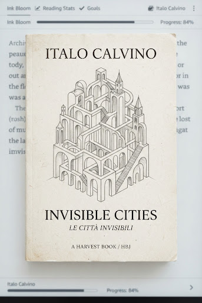
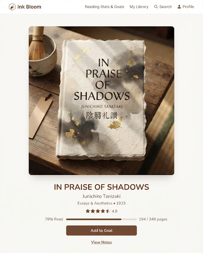
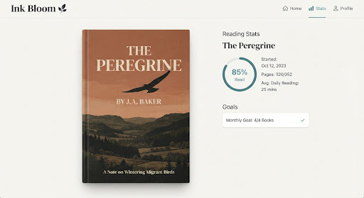
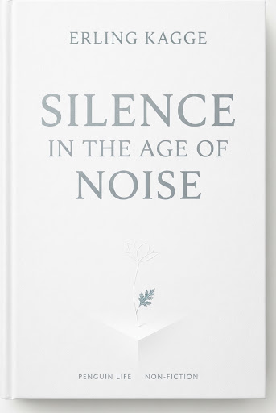

Self-Regulated Garden
Your Reading Habit
Personal metrics stored locally on this machine alone. No social leaderboards, no vanity metrics, no peer pressure—simply quiet communion with the written word.
eco
Archival Year • 2025
Garden Vitality
nest_eco_leaf
18 Days Active
Continuous evening reflection
Cycle 3
Volumes Bound
auto_stories
14 Finished
Annual intention: 24 books
Time in Sanctuary
hourglass_bottom
86.4 Hours
Daily cadence: ~42 mins
check_circle
Consistent pacing
Leaves Turned
menu_book
4,912 Pages
Archival density: 16.3 p/day
history_edu
Essays & Fiction
Today's Cultivation
Daily Bloom Ring
Goal Reached
35
/ 30 Mins
A peaceful reserve of silence.
You surpassed your quiet quota at 4:18 PM while immersed in The Book of Disquiet.
verified
116% of daily baseline realized
Adjust daily intention
Current: 30 minutes/day
Circadian Rhythms
nightlight
Peak Attention Window
Your deepest reading velocity naturally surfaces during twilight hours.
6 AM
NOON
9:30 - 10:45 PM
12 AM
psychology
Pre-Sleep Sanctuary
72% of all pages turn within 90 minutes of sleep.
Seasons of Mind
84-Day Bloom Tapestry
Dormant
Full Bloom (60m+)
NOVEMBER
DECEMBER
JANUARY
FEBRUARY (PRESENT)
Mon
Tue
Wed
Thu
Fri
Sat
Sun
74 active days recorded out of the past 84 sessions.
Current active run: 18 consecutive days
Shelved Thoughts
Catalog Archive
arrow_forward
Recently Completed
384p
The Book of Disquiet
Fernando Pessoa
star
star
star
star
star
Finished Feb 14
12h 45m reading time

165p
Invisible Cities
Italo Calvino
star
star
star
star
star
Finished Feb 02
5h 18m reading time

92p
In Praise of Shadows
Jun'ichirō Tanizaki
star
star
star
star
star
Finished Jan 26
3h 05m reading time

208p
The Peregrine
J.A. Baker
star
star
star
star
star
Finished Jan 15
7h 20m reading time

160p
Silence: In the Age of Noise
Erling Kagge
star
star
star
star
star
Finished Jan 05
4h 42m reading time
format_quote
“Reading is that fruitful miracle of a communication in the midst of solitude.”
— Marcel Proust, Days of Reading